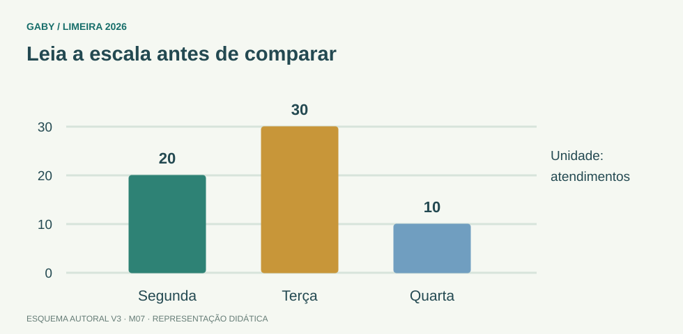

Objetivos do módulo
- Extrair valores de tabelas e gráficos.
- Comparar variações absolutas e percentuais.
- Evitar conclusões não sustentadas pela escala ou pelos dados.
- Calcular frequências, média, mediana, moda e amplitude a partir de tabelas.
- Escolher e interpretar gráficos de colunas, barras empilhadas, linhas, setores, histogramas, pictogramas e dispersão.
- Interpretar taxas, saldos, números-índices e a função afim lida em tabela.
- Reconhecer os limites dos dados: amostra, causalidade, dupla contagem e informação ausente.
Leia a escala antes de comparar

Descrição em texto do esquema
- Segunda: 20 atendimentos
- Terça: 30 atendimentos
- Quarta: 10 atendimentos
Oficina visual · aplique o esquema
No gráfico, qual é o total dos três dias e qual a participação da terça-feira?
Atividade autoral complementar da V3. Registre sua resposta; a resolução está no arquivo de gabarito e revisão.
Mapa do conteúdo
1. Leia título, unidade e fonte
Antes de calcular, identifique o que está sendo medido, em que unidade e qual período. Muitos erros vêm de misturar milhares com unidades ou percentuais com valores absolutos.
2. Variação absoluta x percentual
Variação absoluta=final−inicial. Variação percentual=(final−inicial)/inicial×100%. Uma grande variação absoluta pode representar pequeno percentual quando a base é grande.
3. Escalas de eixos
Gráficos com eixo vertical truncado podem amplificar visualmente diferenças. Em prova, use valores e escala, não a impressão visual.
4. Tabelas de dupla entrada
Cruze corretamente linha e coluna. Quando houver total, confira somas e percentuais para detectar inconsistências.
Aprofundamento 1 — Tabelas: totais, dupla entrada e grandezas calculadas
Uma tabela simples tem uma coluna de categorias e uma de valores. Uma tabela de dupla entrada cruza duas classificações: cada linha é uma categoria de uma variável, cada coluna é uma categoria da outra, e cada célula conta os casos que pertencem às duas ao mesmo tempo.
Totais de linha e de coluna
Quando as categorias são disjuntas (cada caso entra em uma só célula) e cobrem todos os casos, valem três regras:
- o total de cada linha é a soma das células dessa linha;
- o total de cada coluna é a soma das células dessa coluna;
- a soma dos totais de linha é igual à soma dos totais de coluna, e as duas dão o total geral.
Exemplo próprio: atendimentos de uma secretaria escolar em uma semana.
| Turno | Matrícula | Declaração | Transferência | Total |
|---|---|---|---|---|
| Manhã | 42 | 35 | 13 | 90 |
| Tarde | 28 | 40 | 12 | 80 |
| Total | 70 | 75 | 25 | 170 |
Conferência: 42 + 35 + 13 = 90 e 28 + 40 + 12 = 80. Nas colunas, 42 + 28 = 70, 35 + 40 = 75 e 13 + 12 = 25. Os dois caminhos chegam a 170. Se uma soma não fecha, há erro de digitação, categoria omitida ou caso contado duas vezes.
Dado faltante pelos totais
Se uma célula está em branco, mas os totais são conhecidos, monte uma equação. Exemplo: uma biblioteca escolar emprestou, de manhã, 26 livros de ficção e x didáticos; à tarde, 19 de ficção e 31 didáticos; o total geral foi 110. Então 26 + x + 19 + 31 = 110, ou seja, 76 + x = 110 e x = 34.
Quando o enunciado dá uma relação entre totais (por exemplo, "o total da coluna A é igual ao da coluna B"), escreva cada total com as células conhecidas mais as incógnitas e iguale as duas expressões. Muitas vezes a pergunta pede a diferença ou a soma das incógnitas, que sai direto dessa igualdade, sem descobrir cada valor.
Restrinja o denominador à linha ou à coluna pedida
Em percentuais de uma tabela de dupla entrada, a frase do enunciado define o grupo de referência, isto é, o denominador. Na tabela da secretaria, o mesmo número 40 (declarações à tarde) gera três percentuais diferentes:
| Pergunta | Grupo de referência (denominador) | Conta | Resultado |
|---|---|---|---|
| Entre os atendimentos da tarde, quantos % foram declarações? | linha Tarde: 80 | 40 ÷ 80 | 50% |
| Entre as declarações, quantos % foram à tarde? | coluna Declaração: 75 | 40 ÷ 75 | ≈ 53,3% |
| Do total de atendimentos, quantos % foram declarações à tarde? | total geral: 170 | 40 ÷ 170 | ≈ 23,5% |
Expressões como "entre os", "dos que" e "do turno da tarde" restringem o denominador. Use o total geral só quando a pergunta se refere a todos os casos.
Grandeza calculada antes de comparar
Às vezes a tabela não traz pronta a grandeza que a pergunta compara. Calcule-a em cada linha e só depois ordene ou escolha.
- Faturamento de um produto = preço unitário × quantidade vendida.
- Custo total de um plano com franquia = valor fixo + (consumo acima da franquia) × preço de cada unidade excedente. Se o consumo não passa da franquia, o excedente é zero.
| Produto | Preço unitário | Quantidade | Faturamento |
|---|---|---|---|
| Caneta | R$ 2,50 | 120 | R$ 300,00 |
| Caderno | R$ 18,00 | 15 | R$ 270,00 |
| Pasta | R$ 7,50 | 44 | R$ 330,00 |
| Resma | R$ 32,00 | 9 | R$ 288,00 |
Pelo faturamento, a ordem é pasta, caneta, resma e caderno. Ordenar só pela quantidade (caneta primeiro) ou só pelo preço (resma primeiro) dá outra classificação.
Custo com excedente: um contrato de copiadora custa R$ 120,00 por mês com 2.000 cópias incluídas e R$ 0,09 por cópia excedente; outro custa R$ 210,00 com 5.000 cópias incluídas e R$ 0,05 por cópia excedente. Para 3.500 cópias, o primeiro custa 120 + 1.500 × 0,09 = R$ 255,00, e o segundo fica dentro da franquia: R$ 210,00. Para 2.500 cópias, o primeiro custa 120 + 500 × 0,09 = R$ 165,00 e passa a ser o mais barato. O plano mais econômico depende do consumo; por isso, calcule o custo de cada linha.
Tabela de horários: presença simultânea
Para saber por quanto tempo duas ou mais pessoas estiveram juntas, coloque todos os horários de entrada e de saída em ordem, divida o dia nos intervalos entre esses horários e conte quantas pessoas estão presentes em cada intervalo.
| Servidor | Entrada | Saída |
|---|---|---|
| Ana | 7:30 | 13:00 |
| Bruno | 9:15 | 16:40 |
| Carla | 12:20 | 18:00 |
| Intervalo | Presentes | Quantos |
|---|---|---|
| 7:30 a 9:15 | Ana | 1 |
| 9:15 a 12:20 | Ana e Bruno | 2 |
| 12:20 a 13:00 | Ana, Bruno e Carla | 3 |
| 13:00 a 16:40 | Bruno e Carla | 2 |
| 16:40 a 18:00 | Carla | 1 |
Há pelo menos dois servidores ao mesmo tempo das 9:15 às 16:40: 3 h 05 min + 40 min + 3 h 40 min = 7 h 25 min. Os três juntos ficam só das 12:20 às 13:00 (40 min). "Pelo menos dois" inclui os momentos com três; "exatamente dois" não inclui.
Para subtrair horários, converta para minutos ou "empreste" 60 minutos de uma hora: 16:40 − 9:15 = 7 h 25 min.
Aprofundamento 2 — Frequências, classes e frequência acumulada
Frequência absoluta é a contagem: quantas vezes um valor ou uma categoria aparece. Frequência relativa é a parte do total: frequência absoluta ÷ total de observações. Ela pode ser escrita como fração, decimal ou porcentagem. Em classes disjuntas e completas, as frequências relativas somam 1 (100%).
- De absoluta para relativa: divida pelo total. 21 casos em 60 dão 21 ÷ 60 = 0,35 = 35%.
- De relativa para absoluta: multiplique pelo total. 0,35 de 60 = 0,35 × 60 = 21. Não divida o total pelo percentual.
Classes de intervalo
Dados numéricos com muitos valores são agrupados em classes (faixas). A notação a ├ b significa "de a até menos de b": o limite inferior a está incluído e o limite superior b está excluído. Assim, as classes não se sobrepõem e cada valor cai em uma única classe. Um valor igual ao limite entre duas classes pertence à classe em que ele é o limite inferior. Algumas tabelas fecham a última classe dos dois lados, para não excluir o maior dado; quando isso acontece, a tabela indica.
Exemplo próprio: tempo de espera de 80 pessoas em um atendimento, em minutos.
| Classe (min) | Frequência absoluta | Frequência relativa | Frequência acumulada | Relativa acumulada |
|---|---|---|---|---|
| 0 ├ 5 | 12 | 15% | 12 | 15% |
| 5 ├ 10 | 28 | 35% | 40 | 50% |
| 10 ├ 15 | 22 | 27,5% | 62 | 77,5% |
| 15 ├ 20 | 14 | 17,5% | 76 | 95% |
| 20 ├ 30 | 4 | 5% | 80 | 100% |
| Total | 80 | 100% | — | — |
- Quem esperou exatamente 10 minutos está na classe 10 ├ 15, não na 5 ├ 10.
- "Menos de 15 minutos" reúne as três primeiras classes: 12 + 28 + 22 = 62 pessoas.
- "Pelo menos 10 minutos" (10 ou mais) reúne as três últimas: 22 + 14 + 4 = 40 pessoas, o mesmo que 80 − 40.
Frequência acumulada
A frequência acumulada até uma classe é a soma da frequência dessa classe com as de todas as anteriores. A acumulada da última classe é o total (ou 100%, se for relativa). Para recuperar a frequência de uma única classe, subtraia a acumulada da classe anterior: na tabela, a classe 10 ├ 15 tem 62 − 40 = 22 pessoas. Não some acumuladas entre si: cada acumulada já contém as anteriores.
Dados agrupados: o ponto médio é estimativa
Depois do agrupamento, os valores individuais se perdem. Sabemos apenas que 28 pessoas esperaram de 5 a menos de 10 minutos. Para estimar a média, costuma-se supor que todos os valores da classe são iguais ao ponto médio: (limite inferior + limite superior) ÷ 2. Aqui, os pontos médios são 2,5; 7,5; 12,5; 17,5 e 25.
Média estimada = (12 × 2,5 + 28 × 7,5 + 22 × 12,5 + 14 × 17,5 + 4 × 25) ÷ 80 = 860 ÷ 80 = 10,75 minutos. É uma aproximação: com dados agrupados não se obtém a soma nem a média exata, e não se sabe quanto esperou cada pessoa.
Note que a última classe tem largura 10, e as outras, largura 5. Isso muda a altura correta da barra no histograma (veja o Aprofundamento 4).
Aprofundamento 3 — Média, mediana, moda e amplitude a partir de tabelas
Média aritmética
A média aritmética é a soma dos valores dividida pela quantidade de valores. Em uma tabela, some a linha (ou a coluna) pedida e divida pelo número de valores somados.
Exemplo: processos protocolados por dia: segunda 34, terça 41, quarta 29, quinta 38 e sexta 33. Soma = 175; média = 175 ÷ 5 = 35. Ficaram acima da média só terça (41) e quinta (38). Compare cada valor com a média calculada, não com o valor do meio da lista.
Quando a tabela informa quantas vezes cada valor aparece, multiplique cada valor pela sua frequência, some os produtos e divida pelo total de observações (média ponderada pelas frequências).
Média conhecida: recuperar o total e o valor faltante
Da definição sai a relação inversa: total = média × quantidade. Ela resolve tabelas com um valor faltante ou não informado.
Exemplo: uma equipe quer média de 40 processos por dia em 6 dias e fez 175 nos 5 primeiros. O total necessário é 6 × 40 = 240; no sexto dia faltam 240 − 175 = 65 processos. Se fossem dois dias desconhecidos com o mesmo valor, o que falta seria dividido por 2.
Mediana: ordene primeiro
A mediana é o valor do meio dos dados colocados em ordem crescente (ou decrescente): metade dos dados fica abaixo dela e metade acima. A ordem em que a tabela apresenta os dados não importa; ordene antes de procurar o centro. Valores repetidos entram tantas vezes quantas aparecem.
| Quantidade n de dados | Onde está a mediana | Exemplo |
|---|---|---|
| n ímpar | termo central, na posição (n + 1) ÷ 2 | 12, 7, 15, 9, 30, 11, 8 → em ordem: 7, 8, 9, 11, 12, 15, 30. Com n = 7, a posição central é a 4ª: mediana = 11. |
| n par | média dos dois valores centrais, nas posições n ÷ 2 e n ÷ 2 + 1 | 7, 8, 9, 10, 11, 12, 15, 30. Com n = 8, as posições centrais são a 4ª e a 5ª: (10 + 11) ÷ 2 = 10,5. |
No caso ímpar, a mediana é sempre um dos dados. No caso par, pode não ser: 10,5 não aparece na lista.
Mediana em tabela de frequências
Não é preciso escrever a lista inteira. Use a frequência acumulada para saber quais posições cada valor ocupa e localize a posição central.
| Faltas no mês | Alunos (frequência) | Acumulada | Posições ocupadas |
|---|---|---|---|
| 0 | 6 | 6 | 1ª a 6ª |
| 1 | 8 | 14 | 7ª a 14ª |
| 2 | 5 | 19 | 15ª a 19ª |
| 3 | 4 | 23 | 20ª a 23ª |
| 4 | 2 | 25 | 24ª e 25ª |
São 25 alunos (n ímpar): a mediana está na posição (25 + 1) ÷ 2 = 13. A 13ª posição fica entre a 7ª e a 14ª, que valem 1 falta. Mediana = 1.
Caso par: com frequências 6, 6, 6, 4 e 2 para 0, 1, 2, 3 e 4 faltas, são 24 alunos, e as posições centrais são a 12ª e a 13ª. A acumulada até 1 falta é 12, então a 12ª posição vale 1 e a 13ª já vale 2. Mediana = (1 + 2) ÷ 2 = 1,5.
Moda
A moda é o valor ou a categoria de maior frequência, o que mais se repete. Na tabela de 25 alunos, a moda é 1 falta (8 alunos). A moda vale também para categorias sem número: se uma pesquisa de deslocamento registra a pé 14, ônibus 23, carro 9 e bicicleta 11, a categoria modal é ônibus. A moda não é o maior valor da variável nem a primeira categoria em ordem alfabética. Se duas categorias empatam na maior frequência, o conjunto tem duas modas (bimodal).
Amplitude total
Amplitude total = maior valor (máximo) − menor valor (mínimo). Na lista 7, 8, 9, 11, 12, 15, 30, a amplitude é 30 − 7 = 23. Na tabela de faltas, 4 − 0 = 4. A amplitude mede o espalhamento entre os extremos; não é a média dos extremos.
Para comparar, a média da tabela de 25 alunos é (0 × 6 + 1 × 8 + 2 × 5 + 3 × 4 + 4 × 2) ÷ 25 = 38 ÷ 25 = 1,52 falta. Média, mediana e moda podem ser diferentes no mesmo conjunto.
Efeito de um valor extremo
A média usa todos os valores. Por isso, um valor extremo (muito maior ou muito menor que os demais, também chamado discrepante ou atípico) desloca a média. A mediana depende só da posição central e quase não muda.
Exemplo: salários de R$ 2.000, R$ 2.100, R$ 2.200, R$ 2.300 e R$ 2.400 têm média e mediana de R$ 2.200. Incluindo um salário de R$ 15.000, a soma vai a R$ 26.000 e a média passa a 26.000 ÷ 6 ≈ R$ 4.333,33, acima de cinco dos seis salários. A mediana passa só a (2.200 + 2.300) ÷ 2 = R$ 2.250. Um novo valor maior que a média anterior sempre aumenta a média; os valores anteriores não mudam.
Aprofundamento 4 — Tipos de gráfico: quando usar e como ler
Todo gráfico deve trazer título, identificação dos eixos horizontal e vertical, legenda e fonte dos dados. Leia esses elementos antes dos números.
| Gráfico | Uso adequado | O que ler |
|---|---|---|
| Colunas (verticais) ou barras (horizontais) | comparar quantidades entre categorias | altura ou comprimento de cada barra na escala do eixo; barras de mesma largura e espaçamento constante |
| Barras empilhadas | mostrar o total de cada grupo e a sua composição | a barra inteira é o total; cada segmento é uma parte |
| Linhas | evolução de uma medida ao longo do tempo (série temporal) | tendência, subidas, quedas e picos; tempo no eixo horizontal |
| Setores (pizza) | partes de um único total, que somam 100% | ângulo de cada setor proporcional à parte |
| Histograma | distribuição de dados numéricos agrupados em classes | área de cada barra proporcional à frequência; barras encostadas |
| Pictograma | quantidades representadas por símbolos | legenda: quanto vale cada símbolo |
| Dispersão | pares de valores (x, y) de duas variáveis | se os pontos sobem, descem ou não mostram padrão |
Barras empilhadas
Em cada barra, a altura total é a soma dos segmentos. A proporção de uma parte é o segmento dividido pelo total daquela barra. Exemplo: a escola A tem 120 aprovados e 30 reprovados (total 150); a escola B, 160 aprovados e 90 reprovados (total 250). Os reprovados são 30 ÷ 150 = 20% da barra A. A proporção de aprovados é 120 ÷ 150 = 80% em A e 160 ÷ 250 = 64% em B. B tem mais aprovados em números absolutos, mas A tem a maior proporção. Comparar só a altura dos segmentos de barras com totais diferentes não compara proporções.
Gráfico de linhas
O gráfico de linhas é indicado quando uma das variáveis é o tempo e se quer mostrar o movimento dos dados ao longo do tempo, como a evolução mensal de matrículas em dois anos. Um gráfico de setores com uma fatia por mês perderia a ordem temporal, e uma única barra com o total perderia a evolução.
Gráfico de setores: ângulo proporcional a 360°
O círculo inteiro (360°) representa o total. O ângulo de cada setor = fração da parte × 360°.
| Despesa | Percentual | Ângulo |
|---|---|---|
| Pessoal | 45% | 0,45 × 360° = 162° |
| Manutenção | 30% | 0,30 × 360° = 108° |
| Material | 15% | 0,15 × 360° = 54° |
| Outros | 10% | 0,10 × 360° = 36° |
| Total | 100% | 360° |
Caminho inverso: um setor de 54° ocupa 54 ÷ 360 = 0,15 do círculo. Se ele representa R$ 27.000, o total é 27.000 ÷ 0,15 = R$ 180.000. Graus e percentuais são escalas diferentes: 15% não é 15°.
Histograma e classes de larguras diferentes
No histograma, as barras ficam encostadas porque as classes são contíguas. O que representa a frequência é a área da barra (largura × altura). Se todas as classes têm a mesma largura (amplitude da classe), a altura pode ser a própria frequência. Se as larguras são diferentes, a altura correta é a densidade: altura = frequência ÷ largura da classe (com a frequência absoluta ou a relativa). Assim, área = frequência.
Na tabela de espera do Aprofundamento 2, as quatro primeiras classes têm largura 5 e alturas 12 ÷ 5 = 2,4; 28 ÷ 5 = 5,6; 22 ÷ 5 = 4,4 e 14 ÷ 5 = 2,8 pessoas por minuto. A última (20 ├ 30) tem largura 10 e altura 4 ÷ 10 = 0,4. Desenhá-la com altura igual à frequência faria sua área parecer o dobro do que deve em comparação com as outras classes, porque a base é duas vezes mais larga.
Pictograma
No pictograma, cada símbolo vale a quantidade indicada na legenda. Total = número de símbolos (contando as frações de símbolo) × valor de cada símbolo. Se cada ícone vale 40 livros, uma linha com 5 ícones inteiros e um quarto de ícone representa 5,25 × 40 = 210 livros; o quarto de ícone vale 10. Contar os ícones (5,25) sem multiplicar pela legenda é um erro comum.
Gráfico de dispersão
Cada ponto é um par (x, y) observado. Se os pontos tendem a subir juntos, há associação (correlação) positiva; se um sobe enquanto o outro desce, a associação é negativa. Associação não prova que uma variável causa a outra (veja o Aprofundamento 7).
Aprofundamento 5 — Escalas, unidades do eixo e distorções visuais
Unidade do eixo e rótulo
O rótulo do eixo diz a unidade. Em um eixo "em milhares de reais", a marca 3,6 vale 3,6 × 1.000 = R$ 3.600. Em um eixo "em milhões de habitantes", 1,25 vale 1.250.000 habitantes. Em um eixo "em %", o valor já é percentual. A unidade do eixo faz parte da resposta.
Eixo que não começa em zero (eixo truncado)
Em gráfico de colunas, a escala do eixo vertical normalmente vai de zero até o maior valor. Se o eixo começa acima de zero, as alturas visíveis deixam de ser proporcionais aos valores, e a diferença parece maior. Exemplo: colunas de 480 e 520 com eixo iniciado em 440. As partes visíveis medem 40 e 80, e a segunda parece o dobro da primeira. Na verdade, 520 ÷ 480 ≈ 1,083: a segunda é cerca de 8,3% maior, e a diferença real é de 40 unidades. Calcule sempre com os valores lidos na escala.
Por isso, o início acima de zero ou a quebra do eixo devem estar claramente indicados. Ao ler, confira sempre de onde parte o eixo antes de comparar alturas.
Escala uniforme
Em uma escala linear, intervalos visuais iguais representam diferenças numéricas iguais. Marcas igualmente espaçadas rotuladas 0, 50, 100 e 150 têm incrementos iguais de 50. Se marcas igualmente espaçadas forem rotuladas 0, 50, 100, 500 e 1.000, os incrementos passam a ser 50, 50, 400 e 500: a mesma distância no papel deixa de valer a mesma quantidade. Sem aviso de escala especial ou de quebra, isso distorce a leitura. Compare pelos números, não pela distância.
Outras distorções
- Gráficos em três dimensões (3D): a profundidade não representa dado e a perspectiva altera o tamanho aparente das partes.
- Dois gráficos lado a lado só se comparam visualmente se usam a mesma escala.
- Recortar poucos períodos pode esconder a tendência de toda a série.
Ao analisar um gráfico, o IBGE Educa recomenda verificar: se o título é claro, se a fonte dos dados está explícita, se os eixos têm rótulos, se os eixos começam em zero, se as escalas são constantes e se há quebras difíceis de notar.
Aprofundamento 6 — Variações, taxas, saldos e números-índices
Variação absoluta entre períodos consecutivos
Em uma série (valores em ordem de tempo), a variação absoluta entre dois períodos consecutivos é a diferença entre o posterior e o anterior, com sinal. Exemplo: pedidos de vaga por ano.
| Ano | Pedidos | Variação absoluta | Variação percentual |
|---|---|---|---|
| 2021 | 320 | — | — |
| 2022 | 368 | +48 | 48 ÷ 320 = 15% |
| 2023 | 350 | −18 | −18 ÷ 368 ≈ −4,9% |
| 2024 | 406 | +56 | 56 ÷ 350 = 16% |
| 2025 | 470 | +64 | 64 ÷ 406 ≈ 15,8% |
O maior aumento absoluto foi de 2024 para 2025 (+64). O maior aumento percentual foi de 2023 para 2024 (16%), porque a base era menor. Veja se a pergunta pede a variação absoluta (em unidades) ou a percentual (sobre o valor anterior). O ano de maior valor não é necessariamente o de maior aumento.
Percentual da parte sobre o total
Participação percentual = parte ÷ total × 100. Antes de dividir, confira qual é o total: o da tabela inteira, o de um grupo, ou um total que ainda precisa ser somado. Por exemplo, para saber quanto um desconto representa de um trimestre, some antes os três meses e depois divida o desconto pelo total.
Taxas e valores absolutos
Para comparar grupos de tamanhos diferentes, use taxas (proporções), não valores absolutos: divida cada contagem pela própria base. Bairro A: 18 ocorrências em 4.500 habitantes = 0,004, isto é, 4 por 1.000 habitantes. Bairro B: 15 ocorrências em 2.500 habitantes = 0,006, isto é, 6 por 1.000. B tem menos ocorrências em números absolutos, mas a taxa maior. O mesmo vale para taxa de acerto, de aprovação ou de inadimplência.
Saldo entre duas séries
Saldo é a diferença entre o que entra e o que sai. Com receitas e despesas, saldo = receita − despesa: receitas de 85, 92 e 110 e despesas de 70, 88 e 91 (em mil reais) dão saldos de 15, 4 e 19. O mês de maior receita não é necessariamente o de maior saldo. Em estoque, saldo final = inicial + entradas − saídas: com 120 iniciais, 75 entradas e 140 saídas, o estoque final é 120 + 75 − 140 = 55. Somar todos os números ignora o sentido de cada fluxo.
Número-índice de base 100
Um número-índice compara cada período com um período-base, que recebe o valor 100. O IBGE, por exemplo, publica a série do INPC em números-índices com base em dezembro de 1993 = 100. Como ler:
- Em relação à base: variação percentual = índice − 100. Índice 118 indica alta de 18% sobre o período-base; índice 95, queda de 5%.
- Entre dois períodos que não são a base: variação percentual = (índice final ÷ índice inicial − 1) × 100. De 118 para 133: 133 ÷ 118 ≈ 1,127, alta de cerca de 12,7%, e não de 15%. A diferença 133 − 118 = 15 está em pontos do índice, não em porcentagem.
Taxa de variação em gráfico de linha e interpolação
Entre dois pontos (x1, y1) e (x2, y2) de um trecho reto (variação constante), a taxa de variação, ou inclinação, é (y2 − y1) ÷ (x2 − x1). Exemplo: do ponto (2 meses; 140 cadastros) ao ponto (8 meses; 260 cadastros), a taxa é (260 − 140) ÷ (8 − 2) = 120 ÷ 6 = 20 cadastros por mês. Use as diferenças das coordenadas, não só os valores finais.
Interpolação linear: se o gráfico informa que o crescimento é linear nesse trecho, o valor em 5 meses é 140 + (5 − 2) × 20 = 200. Sem a informação de que o trecho é linear, um valor intermediário é só uma estimativa.
Função afim lida de uma tabela
Uma função afim tem a forma f(x) = ax + b. Em uma tabela de pares (x, f(x)), ela se reconhece pela variação constante: para aumentos iguais de x, f(x) aumenta sempre a mesma quantidade. O coeficiente a é a variação de f(x) para cada unidade de x, e b = f(0), o valor inicial.
| x | f(x) | Diferença para a linha anterior |
|---|---|---|
| 0 | 12 | — |
| 1 | 19 | +7 |
| 2 | 26 | +7 |
| 3 | 33 | +7 |
| 4 | 40 | +7 |
Como a diferença é sempre 7 por unidade de x, a = 7; e b = f(0) = 12. Logo, f(x) = 7x + 12. Confira em uma linha: f(4) = 7 × 4 + 12 = 40. Se x anda de 2 em 2, divida a diferença pelo passo: com f(0) = 5, f(2) = 11 e f(4) = 17, a variação é 6 a cada 2 unidades, então a = 6 ÷ 2 = 3 e f(x) = 3x + 5. Se, com x avançando em passos iguais, as diferenças não são constantes (por exemplo, 3, 5, 9), a tabela não é de função afim.
Aprofundamento 7 — Percentuais de pesquisa e conclusões que os dados permitem
Resposta única: as partes somam 100%
Quando cada pessoa escolhe uma só opção (resposta única) e todas as opções aparecem, as categorias são exclusivas e os percentuais somam 100%. Uma pequena diferença, como 99,9% ou 100,1%, só se explica por arredondamento informado. Sem arredondamento, rótulos que somam mais ou menos de 100% são incompatíveis. Esse é o caso típico do gráfico de setores.
Categoria omitida: se uma pesquisa de resposta única com 300 pessoas mostra só A = 48% e B = 31%, a parte não mostrada é 100% − 48% − 31% = 21%, isto é, 0,21 × 300 = 63 pessoas. As categorias mostradas somam 79%, ou 237 pessoas. Calcule o percentual sobre o total antes de converter em pessoas.
Resposta múltipla: a soma pode passar de 100%
Quando a pergunta permite marcar mais de uma opção, cada pessoa pode entrar em várias categorias. Se 64% querem curso de planilhas, 47% de redação e 38% de atendimento, a soma de 149% é possível: cada percentual é calculado sobre o total de pessoas, e quem marcou duas opções aparece duas vezes. Esses percentuais não são partes de um mesmo todo e não devem formar um gráfico de setores. Publicações do IBGE fazem esse aviso: na divulgação da MUNIC 2023, por exemplo, consta que um município pode ter mais de uma forma de destinação de resíduos e que os informantes puderam registrar mais de uma resposta.
Categorias sobrepostas: descontar a dupla contagem
Se as categorias se sobrepõem, somar as contagens conta duas vezes quem está nas duas. Exemplo: 34 inscritos na oficina de leitura, 27 na de matemática e 9 em ambas. Pessoas distintas = 34 + 27 − 9 = 52. Conferência: só leitura, 34 − 9 = 25; só matemática, 27 − 9 = 18; ambas, 9; e 25 + 18 + 9 = 52.
Amostra e representatividade
População é o grupo inteiro de interesse; amostra é a parte observada. Os percentuais de uma tabela descrevem a amostra. Para generalizá-los à população, a amostra precisa ser representativa. Há viés de seleção quando a forma de escolher os participantes favorece um tipo de pessoa: perguntar o esporte favorito dos alunos de uma escola entrevistando só meninos, ou usar só as respostas de quem quis opinar espontaneamente. Mais respostas não corrigem uma seleção enviesada, e transformar a tabela em gráfico não cria representatividade.
Associação não é causalidade
Um gráfico de dispersão ou duas linhas que sobem juntas mostram associação (correlação). Isso não demonstra que uma variável causa a outra. Pode haver um terceiro fator que afeta as duas, a relação pode ter a direção inversa ou a coincidência pode vir da forma de seleção dos dados. No material Matemática Multimídia, da Unicamp, incêndios com mais bombeiros têm mais vítimas porque incêndios mais graves exigem mais bombeiros e causam mais vítimas. Exemplo próprio: em meses com mais venda de guarda-chuvas há mais atrasos de ônibus; a chuva explica as duas coisas.
O que a tabela não permite concluir
- Dados ausentes: se a tabela soma menos que o total informado, não é possível afirmar em que classes estão os casos que faltam. Exemplo: um setor tem 50 servidores, mas a tabela por faixa de idade soma 46; os 4 restantes podem estar em qualquer faixa, inclusive fora das listadas.
- Sem denominador: saber que houve 31 aprovações não permite calcular a taxa de aprovação sem o total de participantes.
- Dados agrupados: a tabela por classes não informa os valores individuais, a soma exata nem a média exata.
- Causa: associação nos dados não prova causa.
- População: amostra sem seleção representativa não permite generalizar.
Quando falta um desses dados, a conclusão correta é que a informação é insuficiente. Não suponha o dado ausente.
Aprofundamento 8 — Mais exemplos resolvidos
Exemplo A — Três denominadores na mesma tabela
Situação: Em uma pesquisa sobre teletrabalho, no setor de Saúde 36 servidores responderam sim e 24 não; na Educação, 63 sim e 27 não. (a) Entre os servidores da Educação, que percentual respondeu sim? (b) Entre os que responderam sim, que percentual é da Educação? (c) Que percentual do total é da Educação e respondeu sim?
Exemplo B — Do setor ao total e de volta
Situação: Em um gráfico de setores, um setor de 126° representa 840 pessoas. Quantas pessoas há no total? Outra categoria tem 18% do total: quantas pessoas são e qual é o ângulo do seu setor?
Exemplo C — Índice: pontos não são porcentagem
Situação: O índice de custo de um serviço vale 100 em 2023 (base), 108 em 2024 e 117 em 2025. Qual foi a variação percentual de 2024 para 2025?
Exemplo D — Histograma com larguras diferentes
Situação: Idades de crianças atendidas: 0 ├ 2 anos, 18 crianças; 2 ├ 6 anos, 24 crianças; 6 ├ 12 anos, 12 crianças. Quais alturas preservam as frequências como áreas? Qual barra fica mais alta?
Aprofundamento 9 — Resumo do aprofundamento
- Totais de linha e de coluna devem fechar no mesmo total geral; use-os para achar célula faltante.
- Em dupla entrada, a pergunta define o denominador: linha, coluna ou total geral.
- Calcule a grandeza pedida (preço × quantidade, fixo + excedente) antes de ordenar.
- Horários: ordene entradas e saídas e conte presentes em cada intervalo.
- Relativa = absoluta ÷ total; absoluta = relativa × total; acumulada soma até a classe.
- a ├ b inclui a e exclui b; ponto médio da classe dá só estimativa.
- Média = soma ÷ quantidade; total = média × quantidade.
- Mediana: ordene; n ímpar, posição (n + 1) ÷ 2; n par, média dos dois valores centrais.
- Moda = maior frequência; amplitude = máximo − mínimo; valor extremo desloca a média.
- Setor: ângulo = fração × 360°; histograma de larguras diferentes: altura = frequência ÷ largura.
- Pictograma: símbolos × legenda; eixo: leia a unidade, o início e se a escala é uniforme.
- Compare taxas, não valores absolutos, quando as bases diferem.
- Índice base 100: variação sobre a base = índice − 100; entre outros anos, divida os índices.
- Função afim em tabela: variação constante = a; f(0) = b.
- Resposta única soma 100%; resposta múltipla pode passar; desconte a dupla contagem.
- Associação não é causa; amostra não representativa não se generaliza.
Exemplos resolvidos passo a passo
Exemplo 1
Situação: Atendimentos: janeiro 200, fevereiro 250. Variação?
Exemplo 2
Situação: Gráfico inicia eixo y em 95 e barras 98 e 100.
Pegadinhas e erros frequentes
- Ignorar unidade.
- Calcular percentual sobre o valor final.
- Concluir tendência com poucos pontos sem apoio.
- Confiar no tamanho visual sem ler eixo.
- Usar o total geral quando a pergunta restringe o grupo ("entre os da tarde").
- Procurar a mediana sem ordenar os dados ou, com quantidade par, não fazer a média dos dois centrais.
- Confundir moda (maior frequência) com o maior valor da variável.
- Colocar o valor b na classe a ├ b: o limite superior fica de fora.
- Somar frequências acumuladas entre si ou dividir o total pelo percentual.
- Tomar graus por percentual no gráfico de setores.
- Desenhar ou ler histograma de classes de larguras diferentes com altura igual à frequência.
- Ler a diferença de pontos de um índice como variação percentual.
- Somar categorias de resposta múltipla ou sobrepostas como se fossem exclusivas.
- Concluir causa a partir de associação ou generalizar a partir de amostra não representativa.
Resumo de prova
- Leia título, legenda, eixos, unidade e período.
- Percentual usa valor inicial como base.
- Eixo truncado pode distorcer percepção.
Exercícios do módulo
Resolva sem consultar o arquivo de gabarito. As questões são autorais e construídas para treinar os conceitos do edital.
- 180
- 1,25
- 20
- 25%
- 125%
- 20%
- 25%
- 80%
- ver título/eixos/unidades
- somar barras aleatoriamente
- ignorar legenda
- assumir eixo começando em zero
- mudar os dados reais
- eliminar legenda
- impedir qualquer leitura
- amplificar visualmente diferenças
- 5%
- 80%
- 20%
- 40%
- 25%
- 10 unidades
- 20%
- ambas A e B
- cruzando linha e coluna
- apenas na última linha
- somando títulos
- pela cor
- substituir dados
- mudar escala
- calcular média
- explicar categorias/séries
- 1.200
- 120
- 12.000
- 12
- supor causas não mostradas
- ser sustentada pelos dados
- ignorar período
- usar impressão visual apenas
Quando terminar, abra Matemática 07 - Tabelas e Gráficos - Gabarito e Revisão.
Checklist de domínio
- ☐ Extrair valores de tabelas e gráficos.
- ☐ Comparar variações absolutas e percentuais.
- ☐ Evitar conclusões não sustentadas pela escala ou pelos dados.
- ☐ Calcular percentuais em tabela de dupla entrada com o denominador certo e achar célula faltante pelos totais.
- ☐ Converter frequências absoluta, relativa e acumulada e localizar valores em classes a ├ b.
- ☐ Calcular média, mediana (casos ímpar e par), moda e amplitude a partir de tabela.
- ☐ Ler gráficos de setores (ângulos), barras empilhadas, histogramas, pictogramas e linhas.
- ☐ Identificar unidade do eixo, eixo truncado e escala não uniforme.
- ☐ Interpretar índice de base 100, taxas, saldos e função afim em tabela.
- ☐ Reconhecer quando os dados não permitem concluir: amostra, causa, dupla contagem e dados ausentes.
Meta do módulo: 80% ou mais nas questões, sem depender de consulta.
Referências e conteúdos auxiliares
- IMPA/OBMEP — Portal da Matemática, módulosVideoaulas, exercícios e materiais por tema. Localize o assunto indicado no roteiro complementar do módulo.
- IBGE Educa — Principais tipos de gráficos para a educação básicaElementos obrigatórios (título, eixos, legenda, fonte); colunas e barras com mesma largura e escala a partir de zero; setores proporcionais; gráfico de linhas para dados ao longo do tempo; verificação de eixos que não começam em zero, escalas constantes e quebras; 3D não recomendado. Conferido em 18/11/2026.
- IBGE Educa — A Média AritméticaMédia simples como soma dos valores dividida pelo número de observações; a média é influenciada por todos os valores e deixa de representar bem os dados quando há valores muito altos. Conferido em 18/11/2026.
- IBGE Educa — A MedianaDados ordenados; posição (n + 1) ÷ 2 no caso ímpar; média dos dois centrais (posições n ÷ 2 e n ÷ 2 + 1) no caso par; mediana não afetada por valores extremos. Conferido em 18/11/2026.
- OBMEP/IMPA — Estatística Básica I (material teórico "Estatística Básica: O Início")População, amostra e viés de seleção; amplitude; classes fechadas à esquerda e abertas à direita; frequências absoluta, relativa e acumulada; setor com ângulo proporcional à frequência relativa; moda como classe de maior frequência. Conferido em 18/11/2026.
- OBMEP/IMPA — Noções Básicas de Estatística (material teórico "Introdução à Estatística")Frequência absoluta e relativa; média, moda e mediana (quantidade par e ímpar); média calculada com frequências; efeito de valor extremo; amostra representativa e limites da generalização. Conferido em 18/11/2026.
- OBMEP/IMPA — Função Afim (material teórico "Noções Básicas – Parte 1")Função afim f(x) = ax + b caracterizada por taxa de variação constante; a é essa taxa e b = f(0). Conferido em 18/11/2026.
- UFPR/LEG — Estatística descritiva (notas de aula)Histograma com área igual à frequência relativa e altura igual à densidade (frequência relativa ÷ amplitude da faixa), para faixas de amplitudes diferentes; ponto médio da classe como suposição, com perda de informação. Conferido em 18/11/2026.
- Unicamp/M3 Matemática Multimídia — Ação, reação e correlação (guia do professor)Correlação não é causalidade; terceiro fator (fator de confusão); exemplo dos incêndios e bombeiros. Conferido em 18/11/2026.
- IBGE — Índice Nacional de Preços ao Consumidor (INPC)Série de números-índices com base em dezembro de 1993 = 100. Conferido em 18/11/2026.
- IBGE Agência de Notícias — MUNIC 2023: resíduos sólidosExemplo de categorias não exclusivas: município pode ter mais de uma forma de destinação; informantes puderam registrar mais de uma resposta. Conferido em 18/11/2026.
Referências externas de apoio consultadas para a V3 em 27/09/2026. A origem das questões é o material autoral do projeto; estes links não indicam que uma instituição publicou ou validou os exercícios. As páginas externas precisam de internet. Em informática, confira a versão do programa; em legislação, observe o recorte e as regras de atualização do edital.